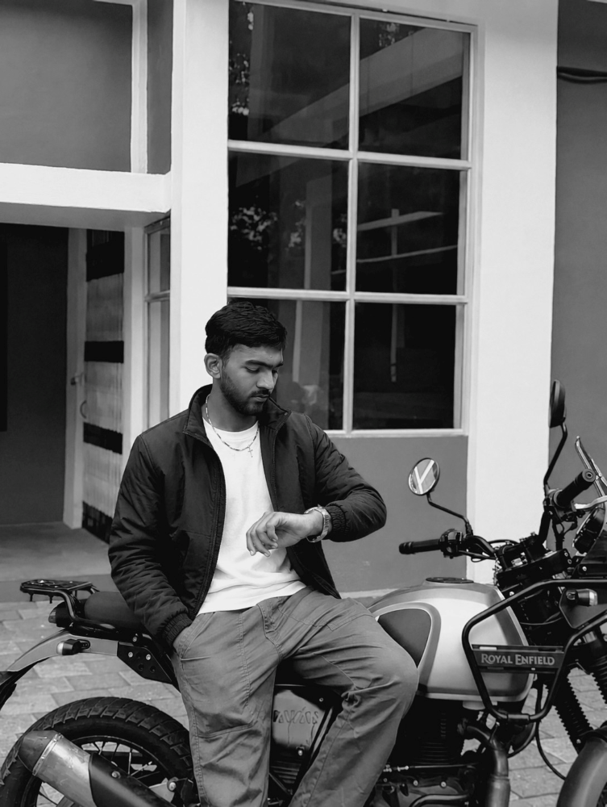
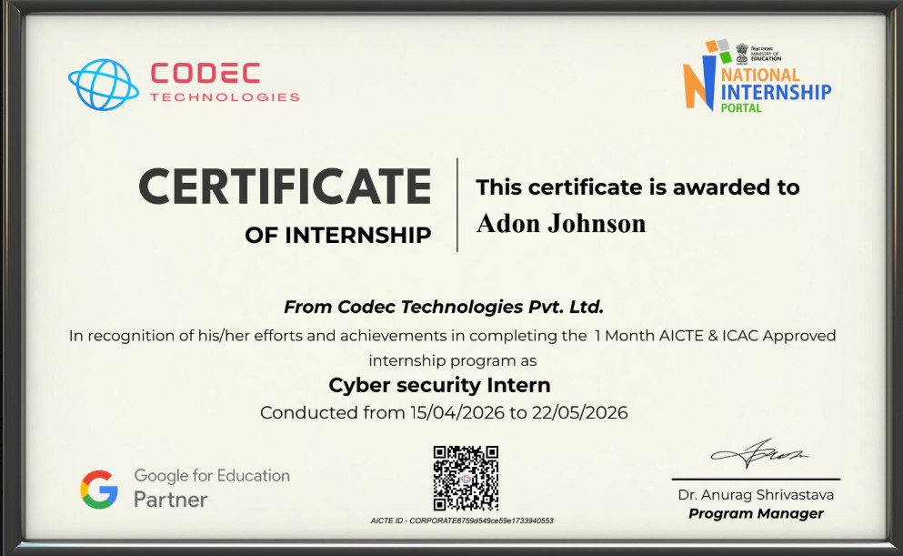
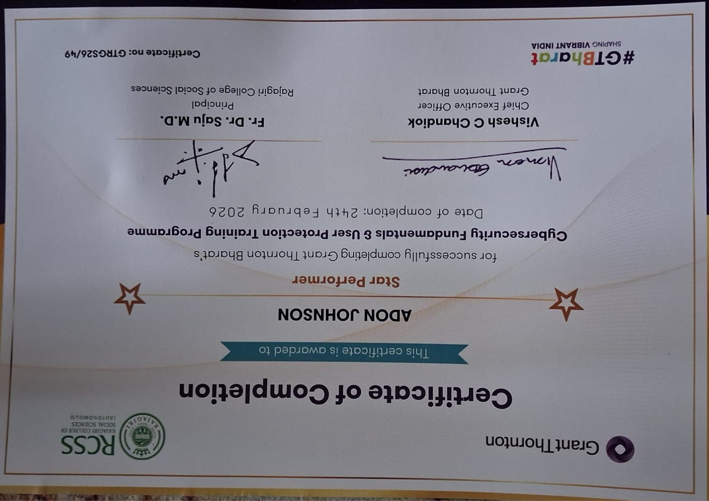
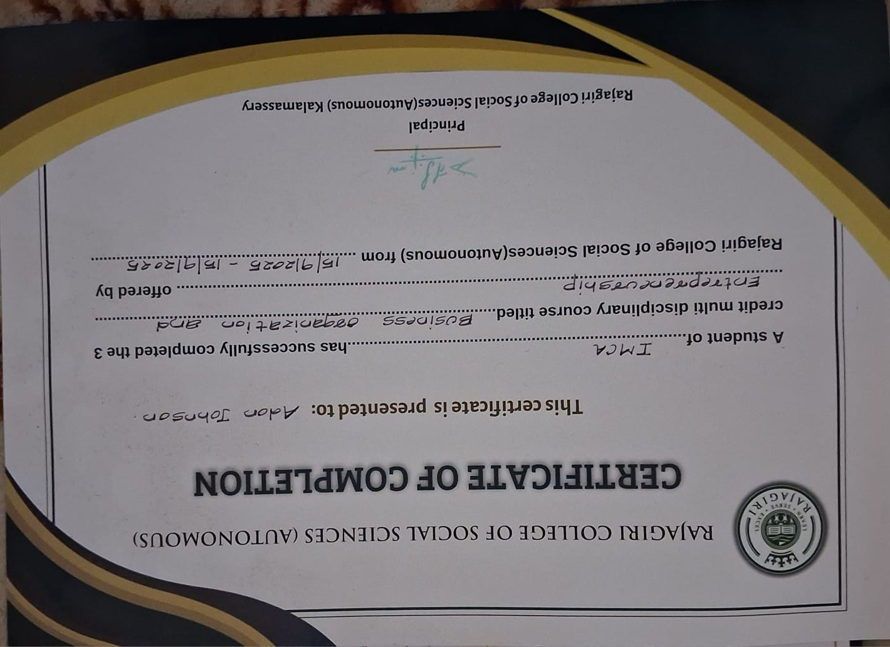

Web Development
Responsive websites, user experiences and the technologies behind them.
IMCA STUDENT · KERALA, INDIA
I’m an Integrated MCA student at Rajagiri College, exploring how software, cybersecurity and emerging technologies can solve practical problems. I enjoy learning by building, collaborating and improving one project at a time.

01 / ABOUT
I’m Adon, an Integrated Master of Computer Applications (IMCA) student at Rajagiri College of Social Sciences, Kalamassery. My interests include software development, web technologies, cybersecurity, cloud computing and data science. I’m developing my technical foundation through coursework, training programmes and hands-on practice, while learning how to contribute effectively in a team.
02 / AREAS OF INTEREST
These are areas I’m actively interested in learning and developing—not a claim of expert-level proficiency.
Responsive websites, user experiences and the technologies behind them.
Security fundamentals, user protection and safer digital systems.
Programming fundamentals, logical thinking and practical applications.
Cloud services, infrastructure concepts and application deployment.
Working with data, identifying patterns and communicating insights.
03 / PROJECTS
A growing showcase. Only work that is actually built should be marked as completed; add team contributions and source links as projects are ready to share.
A responsive personal website presenting my education, areas of interest, training and project journey. Published using GitHub Pages.
View source on GitHub ↗An academic project concept for organising visitor entry and ticketing at a wildlife sanctuary. Update this card with implementation details, technologies and your role when development is complete.
Concept / development details to be addedGroup and individual projects can be added here with the actual software used, your contribution, screenshots and a repository link.
04 / EXPERIENCE & TRAINING
Codec Technologies Pvt. Ltd. · National Internship Portal
Completed a one-month AICTE & ICAC-approved internship programme as a Cyber Security Intern.
View internship certificate ↗Grant Thornton Bharat · Rajagiri College of Social Sciences
Successfully completed the training programme and received the Star Performer recognition.
View completion certificate ↗05 / CERTIFICATES & ACADEMIC ACHIEVEMENTS

Codec Technologies · 15 April–22 May 2026
View certificate ↗
Grant Thornton Bharat · Star Performer · 24 February 2026
View certificate ↗
Rajagiri College of Social Sciences · 15 September–15 December 2025
View certificate ↗06 / EDUCATION
Rajagiri College of Social Sciences (Autonomous), Kalamassery
Developing a foundation in computing, programming and computer applications.
07 / GET IN TOUCH
Open to learning opportunities, collaboration and meaningful conversations about technology.
adonjohnson85@gmail.com ↗